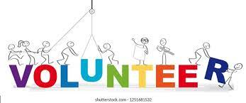
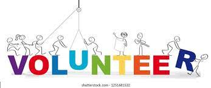

Sarai Herrera
A brief introduction, my name is Sarai Herrera, an undergraduate at the University of California-Riverside. I am currently working towards my Chemical Engineering major and a Bachelor's in Science. I am a very motivated student with a drive to succeed. I have always been interested in the STEM field and hope to pursue a future career in science. I am also a first generation college student who is taking newly found steps to a better life. I am motivated by my parents and family to continue my path to higher education. As a highly motivated and ambitious student, I feel that I coordinate well with team collaboration and problem solving situations. My experience comes from different backgrounds. I have volunteered through high school and other community organizations, helping my community and others reach equal opportunities. I myself have faced situations where I have not been able to have access to opportunities that would further my knowledge and experience. Because of this, I feel inclined to create and help others through volunteering as well as through non-profit organizations. I have also been exposed to customer service jobs where I was able to communicate and collaborate well with others. I am excited about learning, and being exposed to different fields of study. In addition to my experience, I have a strong work ethic and loyalty for furthering my projects while discovering new things. I decided to attend college to pursue higher education, and give myself a better chance at jobs of higher caliber. I am also a first generation college student, which also means that I don’t know what I’m doing half the time. This is a new experience that I wasn’t able to get help from my parents; the people I have depended on my entire life up to this point. It’s a scary feeling especially when you begin to pay for education that has been free your whole life until now. There was no question about whether or not I was going to college. I had worked hard to afford this tuition, and my parents have supported my dreams. This is the place I want to be. I feel completely blessed to have the opportunity to experience new things and further my education. I have entered UCR undeclared for the time being. I still feel like I have not been exposed to as many things I’d like to experience. As of now I feel comfortable being undeclared because I know soon I will have to decide on a major, but for the time being I am still in search of passion of sorts. I do enjoy stem , but at times it's very tedious and time consuming. I want to find a major that can provide me with a challenge as well as more hands on experience rather than visual learning. I like to experience things with a hands-on setting, I believe that is the best way I learn. As of now, I am still in the gray area space where I am considering many things. I am also scared to choose the wrong major and have to deal with it for the rest of college. I also want to choose a major that will help my parents and I financially.
I live vicariously through the risks I take. Some may not pay off, but I rather sleep at night than wonder 'what if' at 3 am. "You don't have to,'' said my older sister in an apprehensive tone, as she looked down at the pavement like it was going to escape from under her feet. I never intended to join Cross country just like every other person who dislikes running three miles without any break, I am a soccer enthusiast, loving every moment shared with my teammates. However, Cross country was the black horse in my high school career engulfing me in its community.
The list was there, sitting on the blue bench lonely, the Cross country sign-up sheet. It was on a deserted island, or at least that's what it looked like. No girl dared to step foot near its perimeter in fear of getting pulled with no chance of escape. But there I was eyeing it as if I altered my glance even for a second it'd disappear. Fine, I thought what's the worst that could happen, me running three miles. At that moment my name was forever engraved on the sheet of paper that lead to many motivational, heartwarming, and painful memories. My sister had taken interest in running senior year and as an entering freshman, I barely knew my ropes around the school. Yet, being able to be on the same team as my sister made me want to try running too, even if it's something I dreaded. She was better than I was, and that just fueled my fire, I wanted to beat her, and show her that I could keep up with her. Like a little kid, I followed in my sister's footsteps, because she is my role model.
It was a painful journey practicing running hills each time a little bit longer, just enough to feel my thighs get numb. It was excruciating the way the sun hit every uncovered part of my body at summer practice. But it was something that my sister and I had made our own, we bonded and shared training tips and diet plans. However, as I got into running she moved on to college. And I was left to continue this passion on my own. Of course, I was scared of independence but it was an eye-opening and reassuring experience. exactly what I needed to find my inner runner. As I became a better runner, I got to help other girls who were in my situation, lending my own personal experiences like tips to help their shin splints and sore quads. The community that centered around Cross country was new but it welcomed me with open arms and I thrived. In my junior year, I was named captain and was able to see my team make history. That year it was the first time the girl’s team had ever made it to the CIF semifinals let alone CIF. It all started with a small jog around the block with my sister telling me that I didn’t have to run with her. To a group of girls that I call running sisters. In all, my motivation to prove myself led me to be an example for other girls.
As I walked into the building I was hit with the fresh scent of freshly baked bread along with the odor of strong brewed coffee. I find myself here every holiday or day of celebration. Porto's bakery is the place that brings me absolute joy and guilt. Every time is like the first; perfectly aligned pastries with beautiful designs and toppings adding character to every cookie and cake. As I order my usual chocolate eclairs I sit down with my two sisters and my father. My mother is never there to share the heartwarming moment of the first bite of such a delicacy. Not because she would rather be at home, but because she doesn’t allow herself to. She is trapped in a hotel from six am till five pm. The hotel beds don’t make themselves. I envy the visitor who takes my mother’s time away, and I wish she could be there creating new memories with us as we share a bite of my chocolate eclairs. But she sacrifices her happiness so we can have the liberty of eating out. As we sit at Porto's bakery and entertain each other with conversation, my father gets a call. He gets up and leaves the table. I looked down at my plate, this chocolate eclair isn't looking as appetizing as it was a second ago. I fidget with the filling and decide to save it for a later time. We arrive home, my father glued to his laptop as he converses on the phone with drivers he needs to show up to start their route. My older sister in our shared room begins her thirteen-page essay and encloses herself to the small space the room offers. My little sister and I begin to clean up. She makes her bed as I move on to wash the dishes. Oh, at times like these I wish we had a dishwasher, but manual labor is completely okay. Time to do the laundry; the hamper is then slung across my shoulders and I walk outside towards the garage. My dogs greet me and slobber my shins with their enthusiastic licks. I acknowledge them and give them each a good belly rub. As I walk into the garage I look up and I’m faced with the huge mirror we have hanging at the end of the garage. The mirror left behind by the former residents; I’ve always thought it was haunted but today I wasn’t scared. I stared at myself. Whenever I get the chance to self reflect I get flashbacks of times where my parents weren’t consumed by work or stress but by the responsibilities of having three toddlers. I truly miss the moments. I turn my back on the mirror and begin loading the washing machine.
Experience
Cashier
• Worked diligently at the cashier, and in the kitchen creating orders for customers
• Provided great customer service and a friendly environment
• Provided assistance with Google Excel spreadsheet and with social networking for the Dana Middle School food stand.
Volunteer
• Collaborated and helped low-income first-generation students in need of tutoring
• Served as a translator, between staff and families. Created large posters for events such as family get-togethers and back-to-school drives
• Filed paperwork and aided in distributing information to donors
Clubs/Sports
• Participated in Beach Cleanups and 5ks, organizing event materials such as volunteer hour distribution.
• In Soccer and Cross Country, was captain two consecutive years leading the teams to CIF Finals
• Created workout exercises and diet plans for members. Ensured that my communication for every member adapted to so they felt their plan was perfect and specialized to the T
• Participated in various team building experiences
Education
UC Riverside
Hawthorne Math and Science Academy
Portfolio



